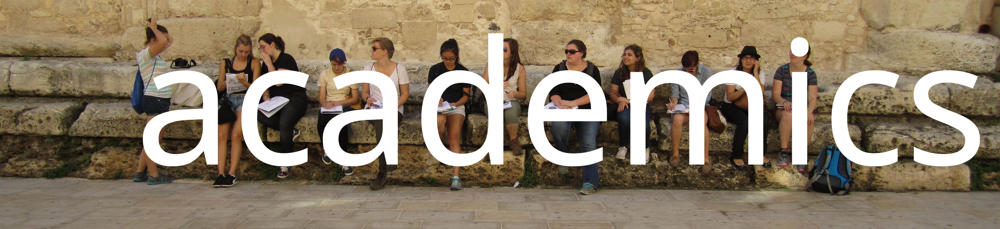
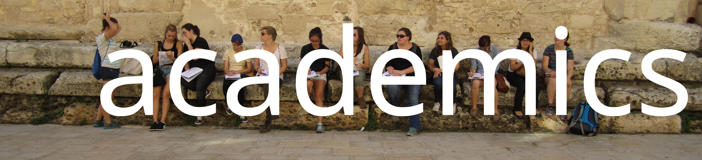
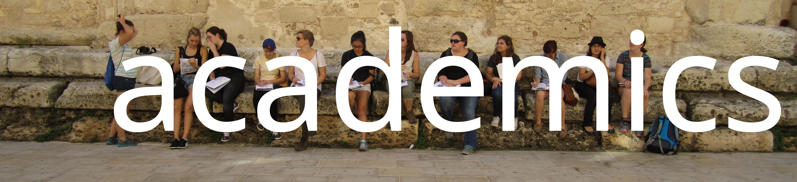
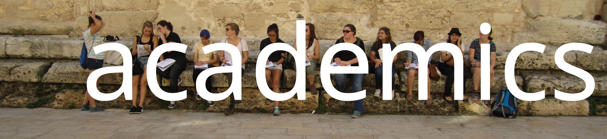

academics
 


CLST341: Ancient City (2 credits)
LATIN203: Intermediate Latin (1 credit)
LATIN301: Advanced Latin (1 credit)
GREEK203: Intermediate Greek (1 credit)
GREEK301: Advanced Greek (1 credit)
ARTHIST255: Renaissance
and Baroque Art History (1 credit)
ITALIAN101: Elementary Italian (1 credit)
Students who wish to take an independent study or directed reading may do so, providing it is supervised by a member of the faculty at the student's own college or university. This work will not appear on an ICCS transcript, and no responsibility for it will be taken by the ICCS faculty.
The ICCS program is the gold standard. We’ve been an integral part of the undergraduate preparation of a huge number of Professors, Museum Directors and Curators, and High School Latin teachers. It would be wrong however, to think that we are only for the graduate-school bound. The vast majority of Centristi over fifty years have gone on to fields unrelated to Classics: finance, business, medicine, law, film, writing, and many other professions. The ICCS is a rigorous program and we take our academics very seriously, but time has shown that such academic rigor serves all of our students. If you’re looking for a low-intensity ‘vacation’ study abroad experience, the Centro probably isn’t for you. But if you are a serious student of classics, we can help propel you into your chosen career with a distinctive experience and continued support. It is normal for Centro professors to get to know their students better than those at their home institution, and for Centristi to receive support in the form of advice and letters of recommendation years after they have returned from Rome.